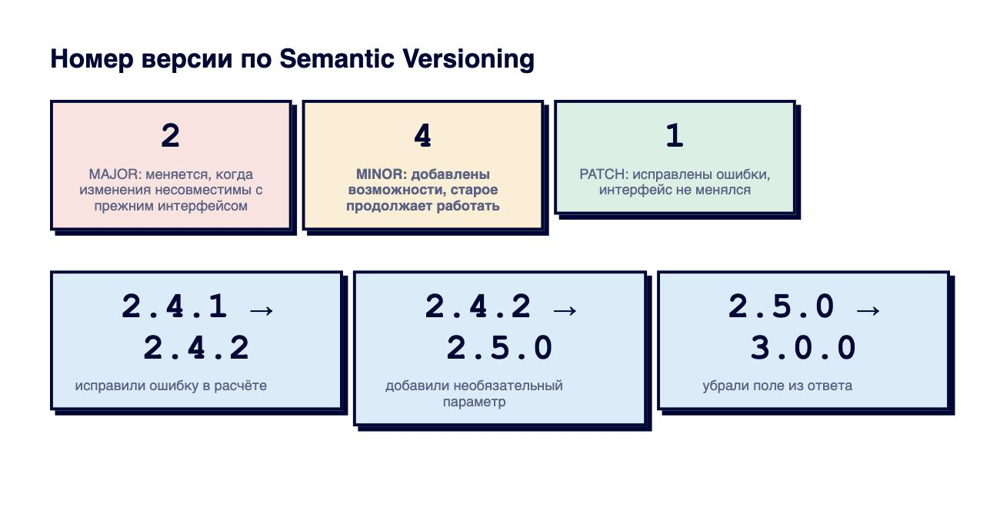
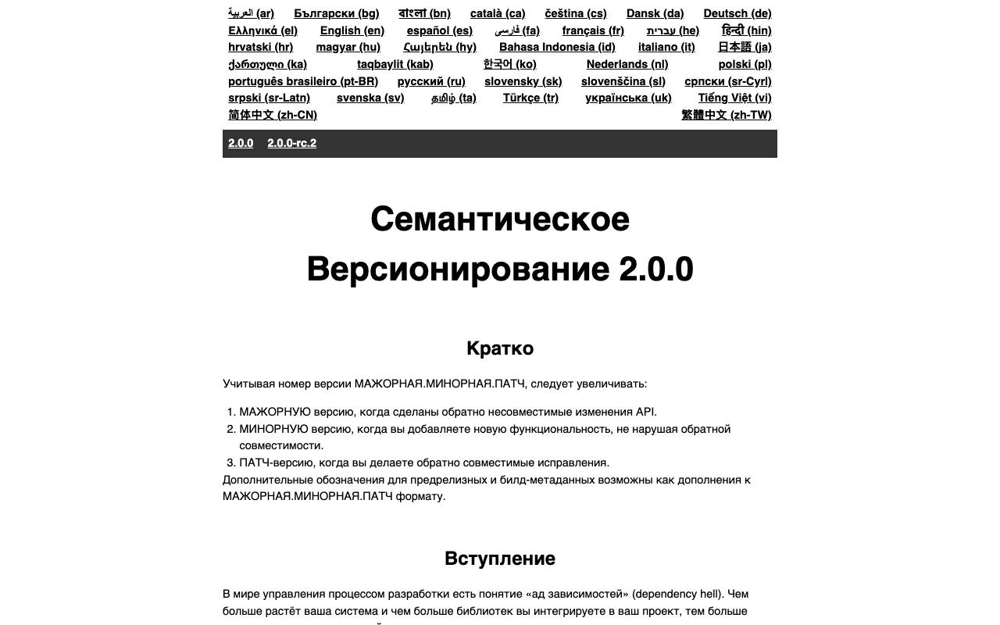
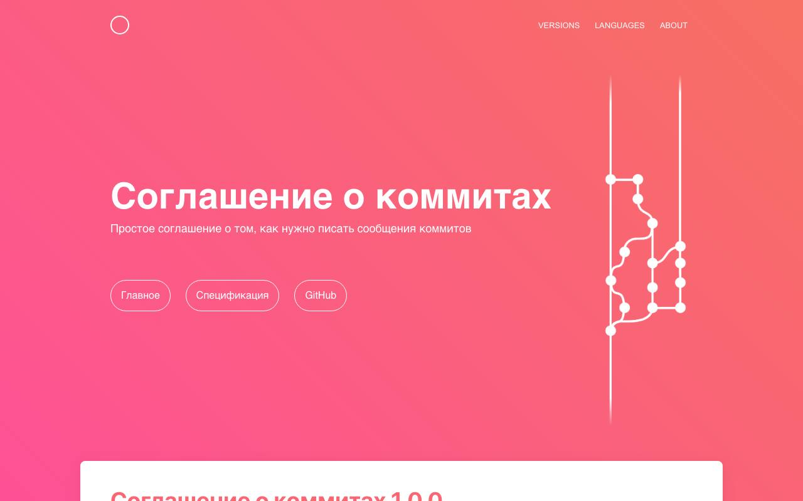
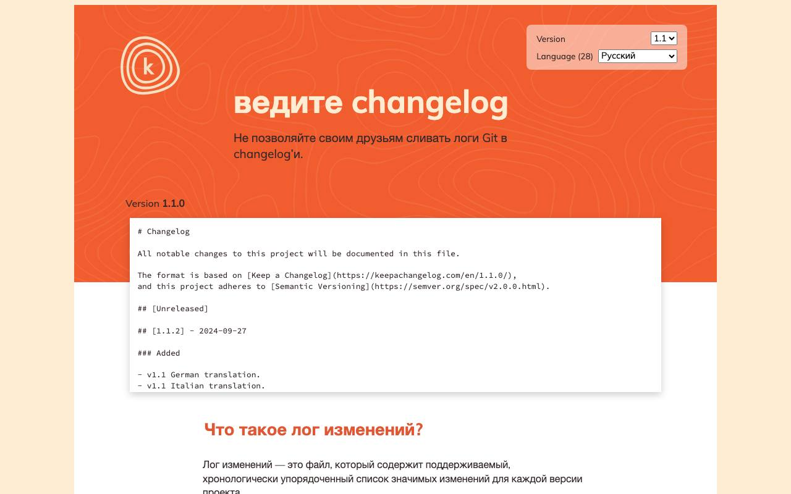
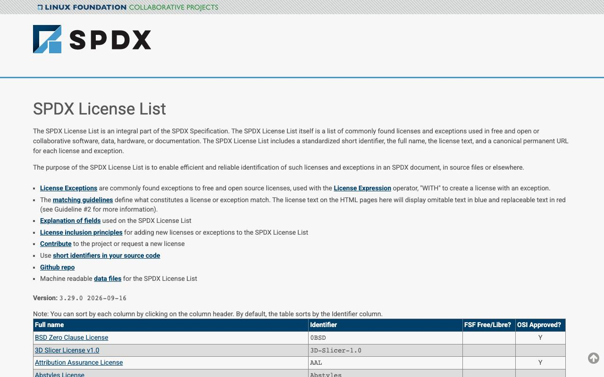

Справочник «Стандарты и сертификаты» · тема 3
Глава 7
Версии, коммиты
и журнал изменений
Номер версии, сообщение коммита и журнал изменений — тоже предмет соглашений. Если их соблюдать, номер следующей версии и текст журнала можно получить из истории автоматически. В главе разобраны Semantic Versioning, Conventional Commits, Keep a Changelog и обозначения лицензий SPDX.
- Документы
- Semantic Versioning 2.0.0 · Conventional Commits 1.0.0 · Keep a Changelog 1.1.0 · SPDX License List
- Уровень
- Базовый
- Где встречается
- Любой репозиторий, библиотеки, выпуск обновлений
- Зачем это знать
- Чтобы по истории было понятно, что изменилось и можно ли обновляться
§1Semantic Versioning
Semantic Versioning задаёт смысл трёх чисел в номере версии MAJOR.MINOR.PATCH. Спецификация опирается на понятие публичного интерфейса: того, чем пользуются другие программы.

| Что изменили в API сервиса заявок | Было | Стало | Почему |
|---|---|---|---|
| исправили ошибку в подсчёте страниц | 2.4.1 | 2.4.2 | интерфейс не изменился |
добавили необязательный параметр priority | 2.4.2 | 2.5.0 | старые запросы работают |
добавили новый метод GET /tickets/stats | 2.5.0 | 2.6.0 | новая возможность |
переименовали поле title в subject | 2.6.0 | 3.0.0 | старые клиенты сломаются |
сделали поле email обязательным | 3.0.0 | 4.0.0 | старые запросы получат ошибку |
При увеличении части младшие обнуляются. После 2.6.3 новая возможность даёт 2.7.0, несовместимое изменение — 3.0.0. После 2.9.0 новая возможность даёт 2.10.0: число в каждой части не ограничено одной цифрой.
| Запись | Смысл |
|---|---|
| 0.4.2 | начальная разработка: интерфейс может измениться в любой момент |
| 1.0.0 | первый стабильный публичный интерфейс |
| 1.0.0-alpha.1 | предварительный выпуск; он младше 1.0.0 |
| 1.0.0+20261007 | метаданные сборки; на порядок версий не влияют |
Порядок версий: 1.0.0-alpha < 1.0.0-alpha.1 < 1.0.0-beta < 1.0.0-rc.1 < 1.0.0. Части сравнивают как числа, поэтому 1.10.0 старше 1.9.0.
requests>=2.31,<3 # любые исправления и новые возможности 2.x fastapi~=0.115.0 # только исправления: 0.115.x pydantic==2.9.2 # точно эта версия

§2Conventional Commits
Conventional Commits 1.0.0 задаёт вид сообщения коммита: тип, необязательная область в скобках, двоеточие и описание. Тип feat соответствует новой возможности, fix — исправлению. Несовместимое изменение помечают восклицательным знаком или строкой BREAKING CHANGE:.
Сообщения коммитов
исправил wip правки по замечаниям obnovil bota
fix(signup): отклонять повторную регистрацию с занятой почтой feat(bot): передавать модели название курса feat(api)!: переименовать поле title в subject docs: описать запуск стенда в README
Слева по истории не понять, что изменилось. Справа видно и область, и смысл, а инструменты по типу определят номер следующей версии.
feat(api)!: переименовать поле title в subject Поле title устарело и путало клиентов с заголовком страницы. BREAKING CHANGE: клиенты должны передавать subject вместо title.
| Тип | Когда | Часть версии |
|---|---|---|
| feat | новая возможность | MINOR |
| fix | исправление ошибки | PATCH |
| feat! или BREAKING CHANGE | несовместимое изменение | MAJOR |
| docs | только документация | не меняется |
| refactor | переделка без изменения поведения | не меняется |
| test | тесты | не меняется |
| chore, ci, build | служебные изменения, сборка, CI | не меняется |

§3Журнал изменений по Keep a Changelog
Журнал изменений (CHANGELOG.md) пишут для людей: что изменилось в каждой версии. Keep a Changelog 1.1.0 предлагает форму: свежая версия сверху, даты по ISO 8601, раздел «Unreleased» для того, что ещё не выпущено, и шесть видов изменений.
# Журнал изменений
Формат — Keep a Changelog, версии — Semantic Versioning.
## [Unreleased]
### Added
- Тёмная тема в личном кабинете.
## [2.5.0] - 2026-09-24
### Added
- Необязательный параметр priority при создании заявки.
### Fixed
- В письме-приветствии подставляется имя ученика вместо {name}.
## [2.4.2] - 2026-09-16
### Fixed
- Повторная регистрация с занятой почтой отклоняется.
### Security
- Ночные копии базы перенесены из каталога, который отдаёт веб-сервер.| Раздел | Что в него пишут |
|---|---|
| Added | новые возможности |
| Changed | изменения существующего поведения |
| Deprecated | то, что скоро уберут |
| Removed | то, что убрали |
| Fixed | исправленные ошибки |
| Security | исправления уязвимостей |
Журнал не заменяет историю коммитов: в него не переносят «поправил опечатку» и «обновил зависимости», а пишут то, что заметит пользователь.

§4Лицензии и SPDX
Лицензия определяет, что другим можно делать с кодом. Чтобы название лицензии понимали и люди, и программы, используют идентификаторы из списка SPDX.
| Идентификатор | Лицензия | Главное условие |
|---|---|---|
| MIT | MIT License | сохранить текст лицензии и имя автора |
| Apache-2.0 | Apache License 2.0 | то же, плюс сообщить об изменениях; патентная лицензия |
| GPL-3.0-only | GNU GPL 3.0 | производную программу распространять под той же лицензией с исходным кодом |
| BSD-3-Clause | BSD с тремя пунктами | сохранить текст; не использовать имя автора в рекламе |
| CC-BY-4.0 | Creative Commons Attribution 4.0 | указать автора; для текстов и изображений |
[project] name = "service-desk" version = "2.5.0" license = "MIT" # SPDX-License-Identifier: MIT

§5Частые ошибки
§6Проверьте себя
- Как изменится версия 2.6.0, если добавили метод? Если переименовали поле?
- Что означают версии 0.4.2 и 1.0.0-rc.1? Какая из 1.0.0-rc.1 и 1.0.0 старше?
- Запишите по Conventional Commits сообщение об исправлении ошибки в форме регистрации.
- Какие шесть разделов предлагает Keep a Changelog?
- Что разрешает лицензия MIT и чем от неё отличается GPL-3.0?
MAJOR.MINOR.PATCH0.y.z — начальная-rc.1 младше релиза1.10 > 1.9feat → MINORfix → PATCH! → MAJORтип(область): описаниеUnreleased сверхуAdded Changed DeprecatedRemoved Fixed Securityдаты ISO 8601MITApache-2.0GPL-3.0-onlySPDX-License-IdentifierСправочник «Стандарты и сертификаты» · глава 7Макаров Максим Николаевич